Publications
* Corresponding author, Students/RAs under my supervision
2026
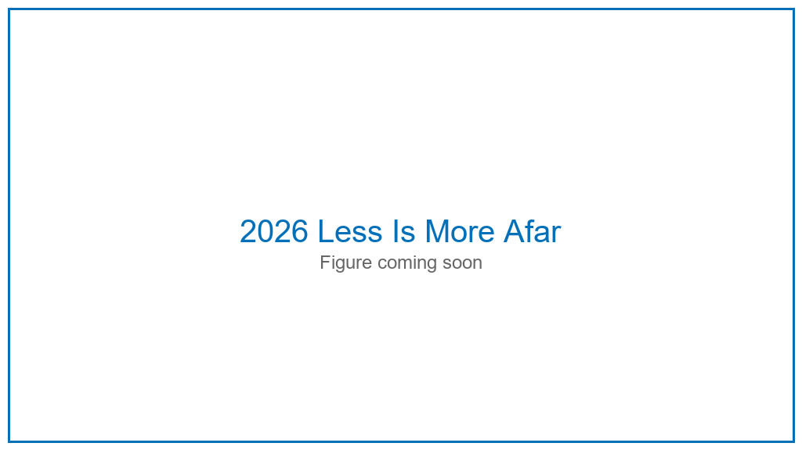
Less is More Afar: Responsive Design for Situated Visualization Based on Viewing Distance
Virtual Reality, 2026.
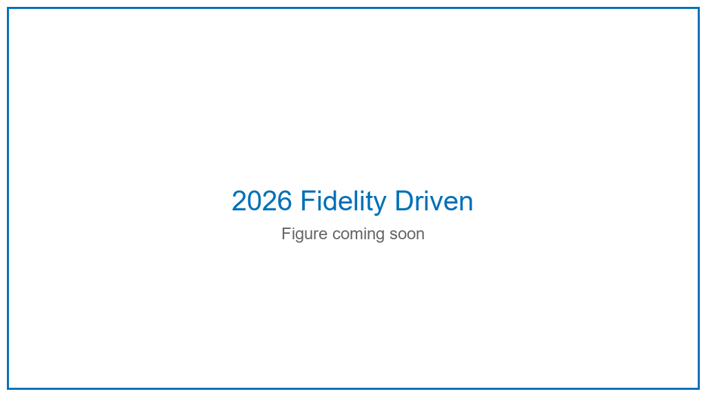
Fidelity-Driven Data Augmentation for Multimodal Large Language Model on Architectural Heritage Interpretation
npj Heritage Science, 2026.
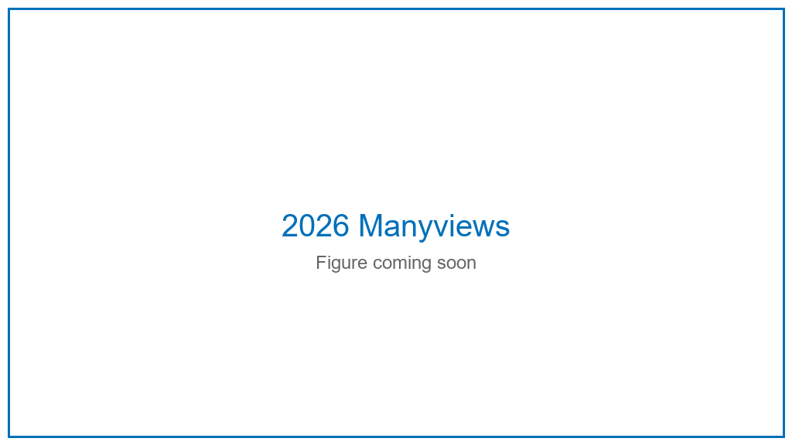
Introducing ManyViews: an AI-assisted tool to support citizens' engagement in the design of urban spaces
International Journal of Human - Computer Studies, 2026.
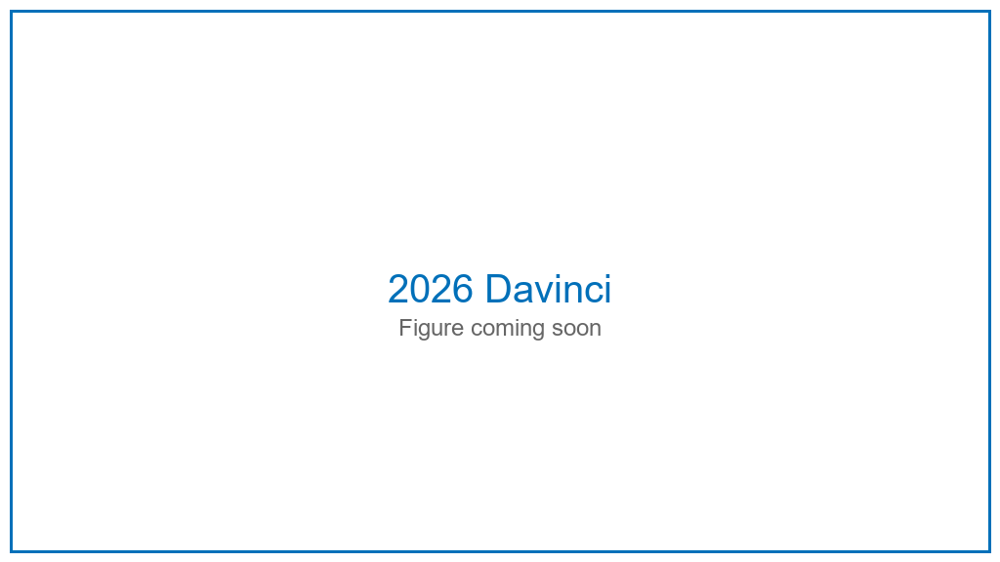
DaVinci: Reinforcing Visual-Structural Syntax in MLLMs for Generalized Scientific Diagram Parsing
The Fourteenth International Conference on Learning Representations (ICLR), 2026.
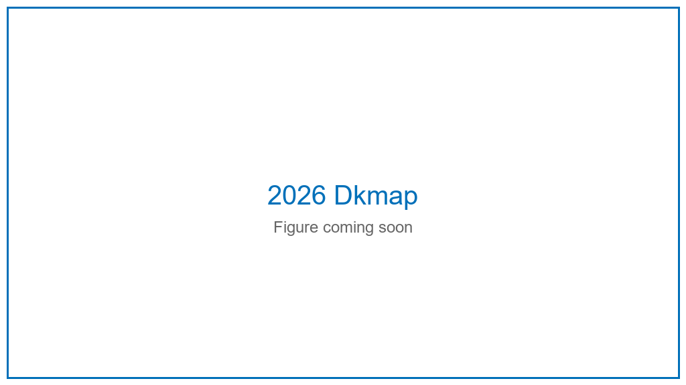
DKMap: Interactive Exploration of Vision-Language Alignment in Multimodal Embeddings via Dynamic Kernel Enhanced Projection
IEEE Transactions on Visualization and Computer Graphics (Proc. IEEE VIS 2025), 32(1): 440 - 450, 2026.
2025
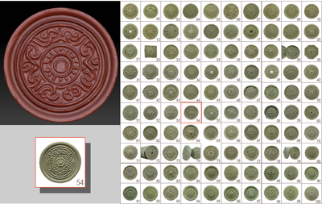
Embodied Heritage by Integrating Digital and Physical Visualization of Eaves Tiles to Display Cultural Heritage Kinship
npj Heritage Science, Article No.: 354, Pages 1 - 17, 2025.
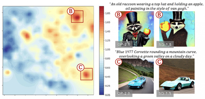
AKRMap: Adaptive Kernel Regression for Trustworthy Visualization of Cross-Modal Embeddings
Proceedings of International Conference on Machine Learning (ICML'25), 2025.
VizTA: Enhancing Comprehension of Distributional Visualization with Visual-Lexical Fused Conversational Interface
Computer Graphics Forum (Proc. EuroVis'25), 2025. Accepted.
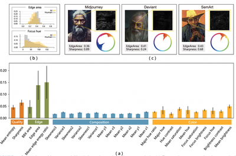
Unified Visual Comparison Framework for Human and AI Paintings using Neural Embeddings and Computational Aesthetics
IEEE Computer Graphics and Applications (Special Issue on Generative AI for Computer Graphics), 2025. Accepted.
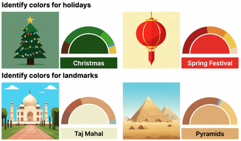
GenColor: Generative Color-Concept Association in Visual Design
Proceedings of ACM CHI Conference on Human Factors in Computing Systems, 2025. Accepted.
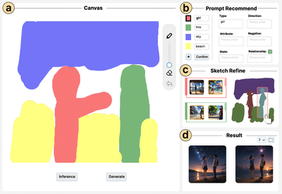
SketchFlex: Facilitating Spatial-Semantic Coherence in Text-to-Image Generation with Region-Based Sketches
Proceedings of ACM CHI Conference on Human Factors in Computing Systems, 2025.
Best Paper Honourable Mention Award


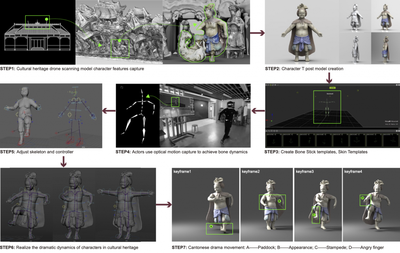
Centennial Drama Reimagined: An Immersive Experience of Intangible Cultural Heritage through Contextual Storytelling in Virtual Reality
ACM Journal on Computing and Cultural Heritage, 2025, 18(1), Article No.: 11, Pages 1 - 22.
2024
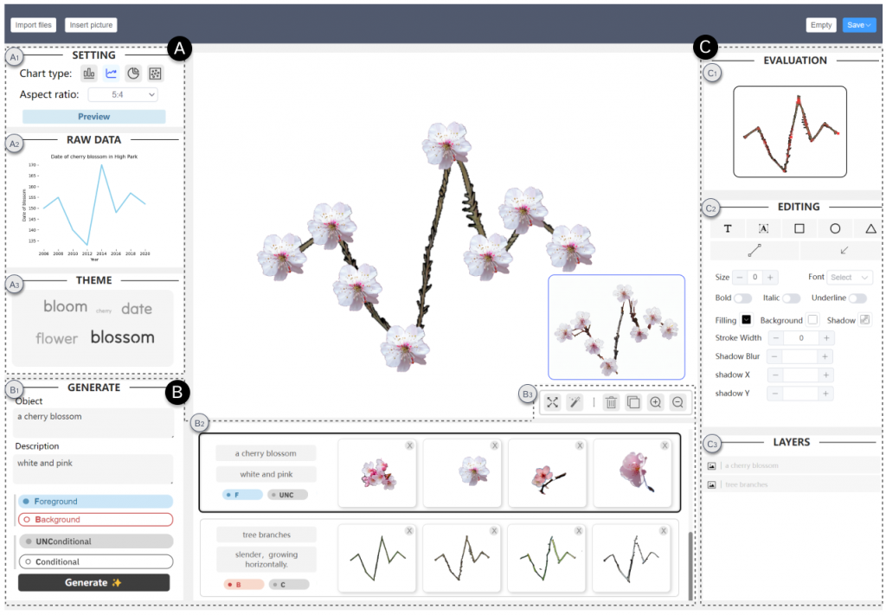
TimeTuner: Diagnosing Time Representations for Time-Series Forecasting with Counterfactual Explanations
IEEE Transactions on Visualization and Computer Graphics (Proc. IEEE VIS 2023), vol. 30, no. 1, pp. 1183 – 1193, 2024.
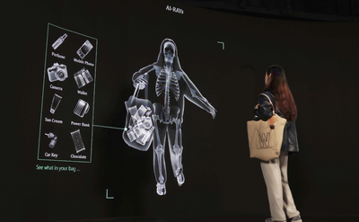
AI-rays: Exploring Bias in the Gaze of AI through Visual Analytics
SIGGRAPH Asia 2024 Art Paper.
2023
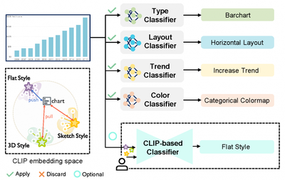
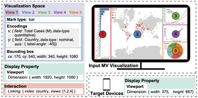
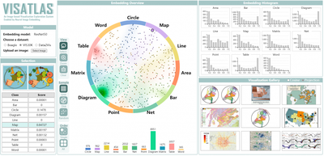
VISAtlas: An Image-based Exploration and Query System for Large Visualization Collections via Neural Image Embedding
IEEE Transactions on Visualization and Computer Graphics, 2023. Accepted.
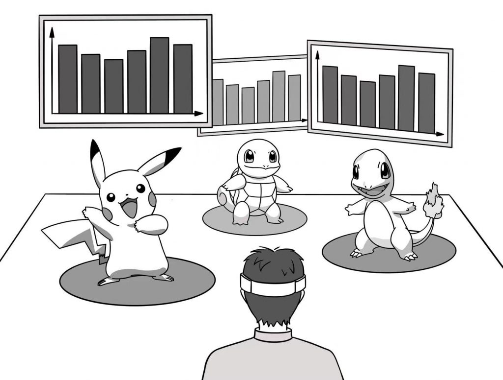
Effects of View Layout on Situated Analytics for Multiple Representations in Immersive Visualization
IEEE Transactions on Visualization and Computer Graphics (Proc. IEEE VIS 2022), vol. 29, no. 1, pp. 440 – 450, 2023.
ActFloor-GAN: Activity-Guided Adversarial Networks for Human-Centric Floorplan Design
IEEE Transactions on Visualization and Computer Graphics, vol. 29, no. 3, pp. 1610-1624, 2023.
2021
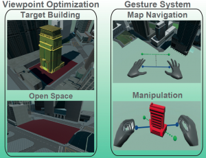
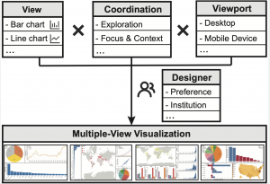
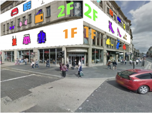
FloorLevel-Net: Recognizing Floor-Level Lines with Height-Attention-Guided Multi-task Learning
IEEE Transactions on Image Processing, vol. 30, pp. 6686-6699, 2021.
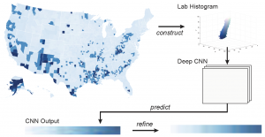
Deep Colormap Extraction from Visualizations
IEEE Transactions on Visualization and Computer Graphics, 2021.
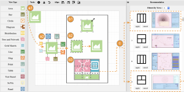
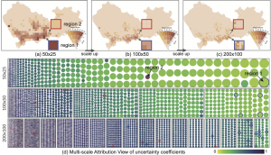
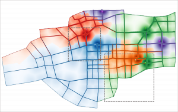
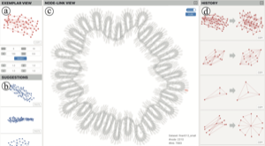
2020
2019-2020
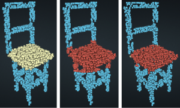
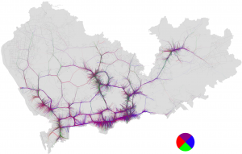
Route-Aware Edge Bundling for Visualizing Origin-Destination Trails in Urban Traffic
Computer Graphics Forum (Proc. EuroVis 2019), vol. 38, no. 3, pp. 581-593, 2019.
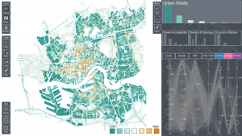
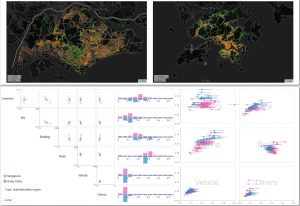
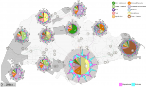
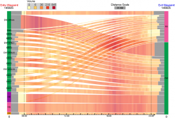
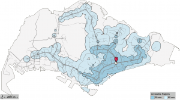